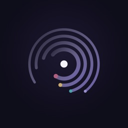

Echolis · Inner Voices
"You are not one voice. You are a conversation." An IFS-inspired reflection space built for two groups.For individuals: users write about a real moment, their parts answer in their own voices (the Protector, the Wounded Child, the Analyst and the Hidden Part), and an Observer leaves them one question.For practitioners: a dashboard for coaches and practitioners who work with parts. Clients connect with their own invite code and choose what to share, and the practitioner sees summaries only, so each session starts from what came up in between.
Most AI companions offer one agreeable bot. Echolis splits what users write across their inner parts, which reply to each other, so they see the conflict instead of just being soothed.
The Observer ends each reflection with one question, not a fix or a verdict, so the insight work stays with the user instead of depending on the app.
Parts remember earlier sessions and patterns surface over time. Users can see and delete their memories.
Built with a lifecycle mindset, with a weekly product scorecard (retention, active writers) and lifecycle messaging designed in.
- 16+ age floor, the same across the app, the Terms and the App Store rating, with extra safeguards for 16–17-year-olds.
- Crisis detection tested on single messages and on crises that build gradually. It points people to their local emergency or hotline numbers, while ordinary venting doesn't set it off.
- Shame and fear replies reassure first, use the person's own words, offer at most one small next step, and never diagnose.
A reflection space, not therapy. It can sit alongside therapy, and users can choose to share a summary with a practitioner.